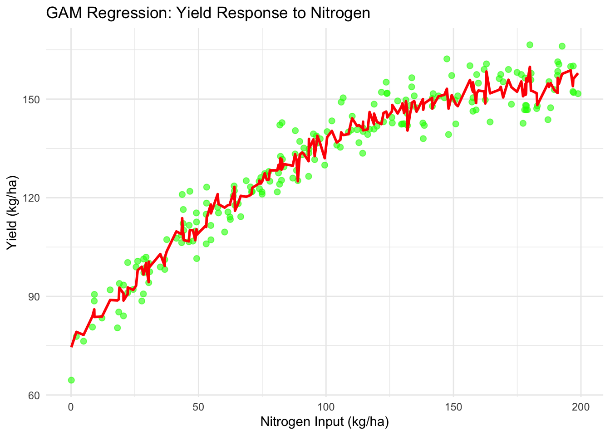

3Advanced Analysis of Crop Yield Response to Nitrogen (Econometrics)
Author
Jaeseok Hwang
Published
September 1, 2024
3.1 Expanding the Simple Regression Analysis
Now, we can expand the simple regression analysis to a more complex framework that better reflects the real-world setting of crop yield response to nitrogen.
From my five years as a Research Assistant (RA) for the Data Intensive Farm Management (DIFM) project (Cite: DSB, 2019), I have developed and applied various regression methods to model crop yield response to nitrogen. These models range from analyzing data at the single-field level to examining multiple farms across multiple years of on-farm field experiments.
3.2 Yield Response Modeling at the Single Field Level
3.2.1 Data Context
In a single field setting, we typically collect the following data: - Yield (\(Y\)): Crop yield for each plot in the field - Nitrogen (\(N\)): Nitrogen input - Seed Rate (\(S\)): Seeding density - Topographical Features: Elevation, slope, and aspect - Soil Quality Metrics: Soil nutrition and water-storage capacity
Given the variability in field conditions and weather uncertainties, traditional parametric models may struggle to capture the yield response effectively. To address this, we employ a Generalized Additive Model (GAM), a non-parametric approach that flexibly fits relationships between variables.
3.2.2 Generalized Additive Model for Yield Response
The following R code demonstrates how to implement a GAM regression model to estimate yield response to nitrogen and other explanatory variables.
# Load necessary librarieslibrary(mgcv)library(ggplot2)# Generate synthetic dataset.seed(123)n<-200nitrogen<-runif(n, 0, 200)# Nitrogen inputseed_rate<-runif(n, 5, 10)# Seeding rateelevation<-rnorm(n, 100, 10)# Elevationslope<-rnorm(n, 5, 2)# Slopesoil_quality<-runif(n, 0, 100)# Soil qualityerror<-rnorm(n, 0, 5)# Random error# Generate yield responseyield<-50+0.8*nitrogen-0.002*nitrogen^2+0.5*seed_rate+0.2*elevation-0.1*slope+0.05*soil_quality+error# Create a data framedata<-data.frame(Yield =yield, Nitrogen =nitrogen, SeedRate =seed_rate, Elevation =elevation, Slope =slope, SoilQuality =soil_quality)# Fit a GAM modelgam_model<-gam(Yield~s(Nitrogen)+s(SeedRate)+s(Elevation)+s(Slope)+s(SoilQuality), data =data)# Generate predictions for plottingdata$Predicted_Yield<-predict(gam_model)# Plot observed vs. predicted yieldggplot(data, aes(x =Nitrogen, y =Yield))+geom_point(color ="green", size =2, alpha =0.6)+# Observed datageom_line(aes(y =Predicted_Yield), color ="red", size =1)+# GAM predictionlabs( title ="GAM Regression: Yield Response to Nitrogen", x ="Nitrogen Input (kg/ha)", y ="Yield (kg/ha)")+theme_minimal()

3.2.4 Strengths of GAM Regression
GAM regression offers significant advantages in modeling crop yield response:
Flexibility: GAM allows for smooth, nonlinear relationships between yield and explanatory variables. This is particularly important for agricultural data, where yield response to nitrogen often exhibits nonlinear patterns due to biological limits.
Interpretability: The smooth terms in GAM provide an intuitive understanding of how each input influences yield.
Handling Variability: GAM is robust to field-specific heterogeneity and weather uncertainties, making it ideal for modeling yield response in diverse agricultural settings.
By applying GAM regression at the single-field level, we can capture the intricate relationships between yield and its determinants, paving the way for more nuanced analyses at larger spatial and temporal scales.
3.3 Expand model to Spatial and Time-Series analysis (regression)
Having explored yield response at the single-field level, we now extend the analysis to account for more complex real-world scenarios. These scenarios include multiple fields across different farms and states in the first year of experiments, as well as repeated experiments in single fields over multiple years. Finally, we consider panel data from multiple fields and multiple years to comprehensively model yield response to nitrogen.
3.3.1 Spatial Regression: Accounting for Location-Based Variability
In the first year of the experiment, several fields were located across multiple farms and states. These fields exhibited spatial variability in yield response due to differences in soil quality, topography, and regional climate. A spatial regression model internalizes the impact of the spatial location of fields and the spatial autocorrelation structure of errors.
3.3.1.1 Spatial Regression Model
A commonly used spatial lag model (SLM) is expressed as:
\[ Y_i = \rho W Y_i + X_i \beta + \epsilon_i \]
Where: - \(Y_i\) = Crop yield for field \(i\) - \(W\) = Spatial weights matrix capturing the relationship between fields - \(\rho\) = Spatial autocorrelation coefficient - \(X_i\) = Matrix of explanatory variables (e.g., nitrogen, soil quality, topography) - \(\beta\) = Coefficients for explanatory variables - \(\epsilon_i\) = Error term, assumed to be i.i.d.
The spatial weights matrix \(W\) defines the structure of spatial relationships, typically based on geographic distance or field adjacency.
Spatial regression models recognize that nearby fields are likely to have similar yields due to shared environmental conditions. This spatial autocorrelation structure mirrors the logic of time-series analysis, where observations are correlated over time.
The logic behind time-series analysis is analogous to spatial models. Just as spatial models account for autocorrelation across fields, time-series models address autocorrelation over time. This approach is particularly relevant in single-field, multiple-year replicated experiments.
3.3.2.1 Time-Series Regression Model
An autoregressive model (AR(1)) for yield response to nitrogen can be expressed as:
\[ Y_t = \phi Y_{t-1} + X_t \beta + \epsilon_t \]
Where: - \(Y_t\) = Yield in year \(t\) - \(Y_{t-1}\) = Yield in year \(t-1\) (lagged yield) - \(\phi\) = Autoregressive coefficient capturing temporal autocorrelation - \(X_t\) = Matrix of explanatory variables (e.g., nitrogen, weather) - \(\beta\) = Coefficients for explanatory variables - \(\epsilon_t\) = Error term, assumed to follow \(E[\epsilon_t \epsilon_{t-s}] = \sigma^2\) for \(s = 0\) and 0 otherwise
Temporal autocorrelation arises when factors influencing yield (e.g., soil fertility, management practices) persist over time. Time-series models are essential for analyzing trends and year-over-year changes in yield response.
3.3.3 Panel Data Analysis: Integrating Spatial and Temporal Dimensions
Once we have enough on-farm field experiment data collected across multiple fields and years, we can employ panel data analysis. Panel data regression incorporates both spatial and temporal dimensions, capturing time trends and spatial heterogeneity.
Where: - \(Y_{it}\) = Yield for field \(i\) in year \(t\) - \(\alpha_i\) = Field-specific fixed effect capturing unobservable time-invariant characteristics - \(\delta_t\) = Year-specific fixed effect capturing time trends - \(X_{it}\) = Matrix of explanatory variables for field \(i\) in year \(t\) - \(\beta\) = Coefficients for explanatory variables - \(\epsilon_{it}\) = Error term, assumed to be i.i.d.
3.3.3.2 Explanation of Panel Data Strengths
Panel data models allow us to: 1. Control for unobservable field-specific factors using \(\alpha_i\). 2. Capture temporal effects like technological change or climate trends using \(\delta_t\). 3. Improve estimation efficiency by leveraging variability across both fields and years.
3.3.4 Handling Unbalanced Panel Data
On-farm field experiment data often present unbalanced panel structures. This imbalance arises because: - Fields differ in size, soil type, or management, leading to variability in the number of experimental plots per location (county or state level). - The number of experiments conducted each year may vary due to funding, weather conditions, or logistical constraints.
3.3.4.1 Challenges of Unbalanced Panel Data
Missing Observations: Some fields or years may lack data, creating gaps in the panel.
Heterogeneity: Unequal representation of fields or years may introduce bias in parameter estimates if not properly accounted for.
Uneven Weights: Overrepresented fields or years may disproportionately influence regression results.
3.3.4.2 Regression Model for Unbalanced Panel Data
To handle unbalanced panel data, we use a mixed-effects regression model. This model includes both fixed effects (to control for field- and time-specific factors) and random effects (to account for unobserved heterogeneity). The model can be written as:
Where: - \(u_i\) = Random effect for field \(i\), assumed to follow \(u_i \sim \mathcal{N}(0, \sigma_u^2)\) - \(\epsilon_{it}\) = Random error term, assumed to follow \(\epsilon_{it} \sim \mathcal{N}(0, \sigma_\epsilon^2)\)
3.3.4.3 Weighted Regression for Unbalanced Panels
An alternative approach is to apply weighted least squares (WLS) to give appropriate importance to underrepresented fields or years:
3.3.4.4 Implementation Example: Mixed-Effects Model
The following R code demonstrates how to implement a mixed-effects model for unbalanced panel data:
# Load necessary librarieslibrary(lme4)# Generate synthetic unbalanced panel dataset.seed(123)n<-15# Number of fieldst<-5# Maximum number of yearsfields<-rep(1:n, each =t)years<-rep(1:t, times =n)observed<-sample(c(TRUE, FALSE), n*t, replace =TRUE, prob =c(0.8, 0.2))# Random missing datafields<-fields[observed]years<-years[observed]nitrogen<-runif(length(fields), 0, 200)fixed_effect<-rep(rnorm(n, 50, 5), each =t)[observed]yield<-fixed_effect+0.8*nitrogen+rnorm(length(fields), 0, 5)data_unbalanced<-data.frame(Field =factor(fields), Year =factor(years), Nitrogen =nitrogen, Yield =yield)# Fit a mixed-effects modelmixed_model<-lmer(Yield~Nitrogen+(1|Field)+(1|Year), data =data_unbalanced)summary(mixed_model)
Linear mixed model fit by REML ['lmerMod']
Formula: Yield ~ Nitrogen + (1 | Field) + (1 | Year)
Data: data_unbalanced
REML criterion at convergence: 361.9
Scaled residuals:
Min 1Q Median 3Q Max
-2.06474 -0.66317 -0.02812 0.64895 1.75602
Random effects:
Groups Name Variance Std.Dev.
Field (Intercept) 10.246 3.2009
Year (Intercept) 0.574 0.7576
Residual 16.512 4.0635
Number of obs: 60, groups: Field, 15; Year, 5
Fixed effects:
Estimate Std. Error t value
(Intercept) 48.0762 1.4662 32.79
Nitrogen 0.8086 0.0104 77.77
Correlation of Fixed Effects:
(Intr)
Nitrogen -0.705
3.3.5 Summary of Model Progression
Spatial Regression: Captures location-based yield variability using spatial weights and autocorrelation.
Time-Series Analysis: Accounts for temporal changes in yield response using lagged yield and explanatory variables.
Panel Data Analysis: Integrates spatial and temporal dimensions to provide a comprehensive understanding of yield response across multiple fields and years.
Unbalanced Panel Data: Addresses the challenges of uneven field representation and missing data using mixed-effects models or weighted regression.
The progression from single-field to multi-field, multi-year analyses enables a deeper understanding of crop yield dynamics, making it possible to design policies and interventions tailored to diverse agricultural landscapes.
Anselin, Luc. 2013. Spatial Econometrics: Methods and Models. Vol. 4. Springer Science & Business Media.
Enders, Walter. 2008. Applied Econometric Time Series. John Wiley & Sons.
Hastie, Trevor J. 2017. “Generalized Additive Models.” In Statistical Models in s, 249–307. Routledge.
Wood, Simon N. 2017. Generalized Additive Models: An Introduction with r. chapman; hall/CRC.
Wooldridge, Jeffrey M. 2019. “Correlated Random Effects Models with Unbalanced Panels.”Journal of Econometrics 211 (1): 137–50.
Source Code
---title: "Advanced Analysis of Crop Yield Response to Nitrogen (Econometrics)"author: "Jaeseok Hwang"date: "Sep 2024"format: htmlbibliography: E00_econometrics_ref.bib---## Expanding the Simple Regression AnalysisNow, we can expand the simple regression analysis to a more complex framework that better reflects the real-world setting of crop yield response to nitrogen. From my five years as a Research Assistant (RA) for the Data Intensive Farm Management (DIFM) project *(Cite: DSB, 2019)*, I have developed and applied various regression methods to model crop yield response to nitrogen. These models range from analyzing data at the single-field level to examining multiple farms across multiple years of on-farm field experiments.---## Yield Response Modeling at the Single Field Level### Data ContextIn a single field setting, we typically collect the following data: <br>- **Yield ($Y$):** Crop yield for each plot in the field <br>- **Nitrogen ($N$):** Nitrogen input <br>- **Seed Rate ($S$):** Seeding density <br>- **Topographical Features:** Elevation, slope, and aspect <br>- **Soil Quality Metrics:** Soil nutrition and water-storage capacity <br>Given the variability in field conditions and weather uncertainties, traditional parametric models may struggle to capture the yield response effectively. To address this, we employ a Generalized Additive Model (GAM), a non-parametric approach that flexibly fits relationships between variables.---### Generalized Additive Model for Yield ResponseThe GAM regression model can be expressed as:$$ Y = \beta_0 + f_1(N) + f_2(S) + f_3(\text{Elevation}) + f_4(\text{Slope}) + f_5(\text{Soil Quality}) + \epsilon $$Where: <br>- $f_1, f_2, \ldots$ = Smooth functions capturing nonlinear relationships <br>- $\epsilon$ = Error term <br>---### Example: GAM Regression with Synthetic DataThe following R code demonstrates how to implement a GAM regression model to estimate yield response to nitrogen and other explanatory variables.```{r}#| echo: true#| fig-height: 5#| fig-width: 7# Load necessary librarieslibrary(mgcv)library(ggplot2)# Generate synthetic dataset.seed(123)n <-200nitrogen <-runif(n, 0, 200) # Nitrogen inputseed_rate <-runif(n, 5, 10) # Seeding rateelevation <-rnorm(n, 100, 10) # Elevationslope <-rnorm(n, 5, 2) # Slopesoil_quality <-runif(n, 0, 100) # Soil qualityerror <-rnorm(n, 0, 5) # Random error# Generate yield responseyield <-50+0.8* nitrogen -0.002* nitrogen^2+0.5* seed_rate +0.2* elevation -0.1* slope +0.05* soil_quality + error# Create a data framedata <-data.frame(Yield = yield, Nitrogen = nitrogen, SeedRate = seed_rate,Elevation = elevation, Slope = slope, SoilQuality = soil_quality)# Fit a GAM modelgam_model <-gam(Yield ~s(Nitrogen) +s(SeedRate) +s(Elevation) +s(Slope) +s(SoilQuality), data = data)# Generate predictions for plottingdata$Predicted_Yield <-predict(gam_model)# Plot observed vs. predicted yieldggplot(data, aes(x = Nitrogen, y = Yield)) +geom_point(color ="green", size =2, alpha =0.6) +# Observed datageom_line(aes(y = Predicted_Yield), color ="red", size =1) +# GAM predictionlabs(title ="GAM Regression: Yield Response to Nitrogen",x ="Nitrogen Input (kg/ha)",y ="Yield (kg/ha)" ) +theme_minimal()```### Strengths of GAM RegressionGAM regression offers significant advantages in modeling crop yield response:1. **Flexibility**: GAM allows for smooth, nonlinear relationships between yield and explanatory variables. This is particularly important for agricultural data, where yield response to nitrogen often exhibits nonlinear patterns due to biological limits.2. **Interpretability**: The smooth terms in GAM provide an intuitive understanding of how each input influences yield.3. **Handling Variability**: GAM is robust to field-specific heterogeneity and weather uncertainties, making it ideal for modeling yield response in diverse agricultural settings.By applying GAM regression at the single-field level, we can capture the intricate relationships between yield and its determinants, paving the way for more nuanced analyses at larger spatial and temporal scales.Cite : @hastie2017generalized , @wood2017generalized## Expand model to Spatial and Time-Series analysis (regression)Having explored yield response at the single-field level, we now extend the analysis to account for more complex real-world scenarios. These scenarios include multiple fields across different farms and states in the first year of experiments, as well as repeated experiments in single fields over multiple years. Finally, we consider panel data from multiple fields and multiple years to comprehensively model yield response to nitrogen.---### Spatial Regression: Accounting for Location-Based VariabilityIn the first year of the experiment, several fields were located across multiple farms and states. These fields exhibited spatial variability in yield response due to differences in soil quality, topography, and regional climate. A spatial regression model internalizes the impact of the spatial location of fields and the spatial autocorrelation structure of errors.#### Spatial Regression ModelA commonly used spatial lag model (SLM) is expressed as:$$ Y_i = \rho W Y_i + X_i \beta + \epsilon_i $$Where: <br>- $Y_i$ = Crop yield for field $i$ <br>- $W$ = Spatial weights matrix capturing the relationship between fields <br>- $\rho$ = Spatial autocorrelation coefficient <br>- $X_i$ = Matrix of explanatory variables (e.g., nitrogen, soil quality, topography) <br>- $\beta$ = Coefficients for explanatory variables <br> - $\epsilon_i$ = Error term, assumed to be i.i.d. <br>The spatial weights matrix $W$ defines the structure of spatial relationships, typically based on geographic distance or field adjacency.Cite: @anselin2013spatial#### Explanation of Spatial AutocorrelationSpatial regression models recognize that nearby fields are likely to have similar yields due to shared environmental conditions. This spatial autocorrelation structure mirrors the logic of time-series analysis, where observations are correlated over time.---### Time-Series Analysis: Capturing Temporal DynamicsThe logic behind time-series analysis is analogous to spatial models. Just as spatial models account for autocorrelation across fields, time-series models address autocorrelation over time. This approach is particularly relevant in single-field, multiple-year replicated experiments.#### Time-Series Regression ModelAn autoregressive model (AR(1)) for yield response to nitrogen can be expressed as:$$ Y_t = \phi Y_{t-1} + X_t \beta + \epsilon_t $$Where: <br>- $Y_t$ = Yield in year $t$ <br>- $Y_{t-1}$ = Yield in year $t-1$ (lagged yield) <br>- $\phi$ = Autoregressive coefficient capturing temporal autocorrelation <br>- $X_t$ = Matrix of explanatory variables (e.g., nitrogen, weather) <br>- $\beta$ = Coefficients for explanatory variables <br>- $\epsilon_t$ = Error term, assumed to follow $E[\epsilon_t \epsilon_{t-s}] = \sigma^2$ for $s = 0$ and 0 otherwiseCite: @enders2008applied#### Explanation of Temporal AutocorrelationTemporal autocorrelation arises when factors influencing yield (e.g., soil fertility, management practices) persist over time. Time-series models are essential for analyzing trends and year-over-year changes in yield response.---### Panel Data Analysis: Integrating Spatial and Temporal DimensionsOnce we have enough on-farm field experiment data collected across multiple fields and years, we can employ panel data analysis. Panel data regression incorporates both spatial and temporal dimensions, capturing time trends and spatial heterogeneity.#### Panel Data Regression ModelA fixed-effects panel data model is expressed as:$$ Y_{it} = \alpha_i + \delta_t + X_{it} \beta + \epsilon_{it} $$Where: <br>- $Y_{it}$ = Yield for field $i$ in year $t$ <br>- $\alpha_i$ = Field-specific fixed effect capturing unobservable time-invariant characteristics <br>- $\delta_t$ = Year-specific fixed effect capturing time trends <br>- $X_{it}$ = Matrix of explanatory variables for field $i$ in year $t$ <br>- $\beta$ = Coefficients for explanatory variables <br>- $\epsilon_{it}$ = Error term, assumed to be i.i.d. #### Explanation of Panel Data StrengthsPanel data models allow us to: <br>1. Control for unobservable field-specific factors using $\alpha_i$. <br>2. Capture temporal effects like technological change or climate trends using $\delta_t$. <br>3. Improve estimation efficiency by leveraging variability across both fields and years. <br>---### Handling Unbalanced Panel DataOn-farm field experiment data often present unbalanced panel structures. This imbalance arises because:- Fields differ in size, soil type, or management, leading to variability in the number of experimental plots per location (county or state level).- The number of experiments conducted each year may vary due to funding, weather conditions, or logistical constraints.#### Challenges of Unbalanced Panel Data1. **Missing Observations**: Some fields or years may lack data, creating gaps in the panel.2. **Heterogeneity**: Unequal representation of fields or years may introduce bias in parameter estimates if not properly accounted for.3. **Uneven Weights**: Overrepresented fields or years may disproportionately influence regression results.#### Regression Model for Unbalanced Panel DataTo handle unbalanced panel data, we use a mixed-effects regression model. This model includes both fixed effects (to control for field- and time-specific factors) and random effects (to account for unobserved heterogeneity). The model can be written as:$$ Y_{it} = \alpha_i + \delta_t + X_{it} \beta + u_i + \epsilon_{it} $$Where: <br>- $u_i$ = Random effect for field $i$, assumed to follow $u_i \sim \mathcal{N}(0, \sigma_u^2)$ <br>- $\epsilon_{it}$ = Random error term, assumed to follow $\epsilon_{it} \sim \mathcal{N}(0, \sigma_\epsilon^2)$ <br>#### Weighted Regression for Unbalanced PanelsAn alternative approach is to apply weighted least squares (WLS) to give appropriate importance to underrepresented fields or years:$$ \text{minimize} \quad \sum_{i=1}^N \sum_{t=1}^T w_{it} \left( Y_{it} - \alpha_i - \delta_t - X_{it} \beta \right)^2 $$ Where: <br>- $w_{it}$ = Weight for observation $(i,t)$, typically inversely proportional to the variance or frequency of observations.Cite: @wooldridge2019correlated#### Implementation Example: Mixed-Effects ModelThe following R code demonstrates how to implement a mixed-effects model for unbalanced panel data:```{r}#| echo: true#| message: false#| warning: false# Load necessary librarieslibrary(lme4)# Generate synthetic unbalanced panel dataset.seed(123)n <-15# Number of fieldst <-5# Maximum number of yearsfields <-rep(1:n, each = t)years <-rep(1:t, times = n)observed <-sample(c(TRUE, FALSE), n * t, replace =TRUE, prob =c(0.8, 0.2)) # Random missing datafields <- fields[observed]years <- years[observed]nitrogen <-runif(length(fields), 0, 200)fixed_effect <-rep(rnorm(n, 50, 5), each = t)[observed]yield <- fixed_effect +0.8* nitrogen +rnorm(length(fields), 0, 5)data_unbalanced <-data.frame(Field =factor(fields), Year =factor(years), Nitrogen = nitrogen, Yield = yield)# Fit a mixed-effects modelmixed_model <-lmer(Yield ~ Nitrogen + (1| Field) + (1| Year), data = data_unbalanced)summary(mixed_model)```### Summary of Model Progression1. **Spatial Regression**: Captures location-based yield variability using spatial weights and autocorrelation.2. **Time-Series Analysis**: Accounts for temporal changes in yield response using lagged yield and explanatory variables.3. **Panel Data Analysis**: Integrates spatial and temporal dimensions to provide a comprehensive understanding of yield response across multiple fields and years.4. **Unbalanced Panel Data**: Addresses the challenges of uneven field representation and missing data using mixed-effects models or weighted regression.The progression from single-field to multi-field, multi-year analyses enables a deeper understanding of crop yield dynamics, making it possible to design policies and interventions tailored to diverse agricultural landscapes.